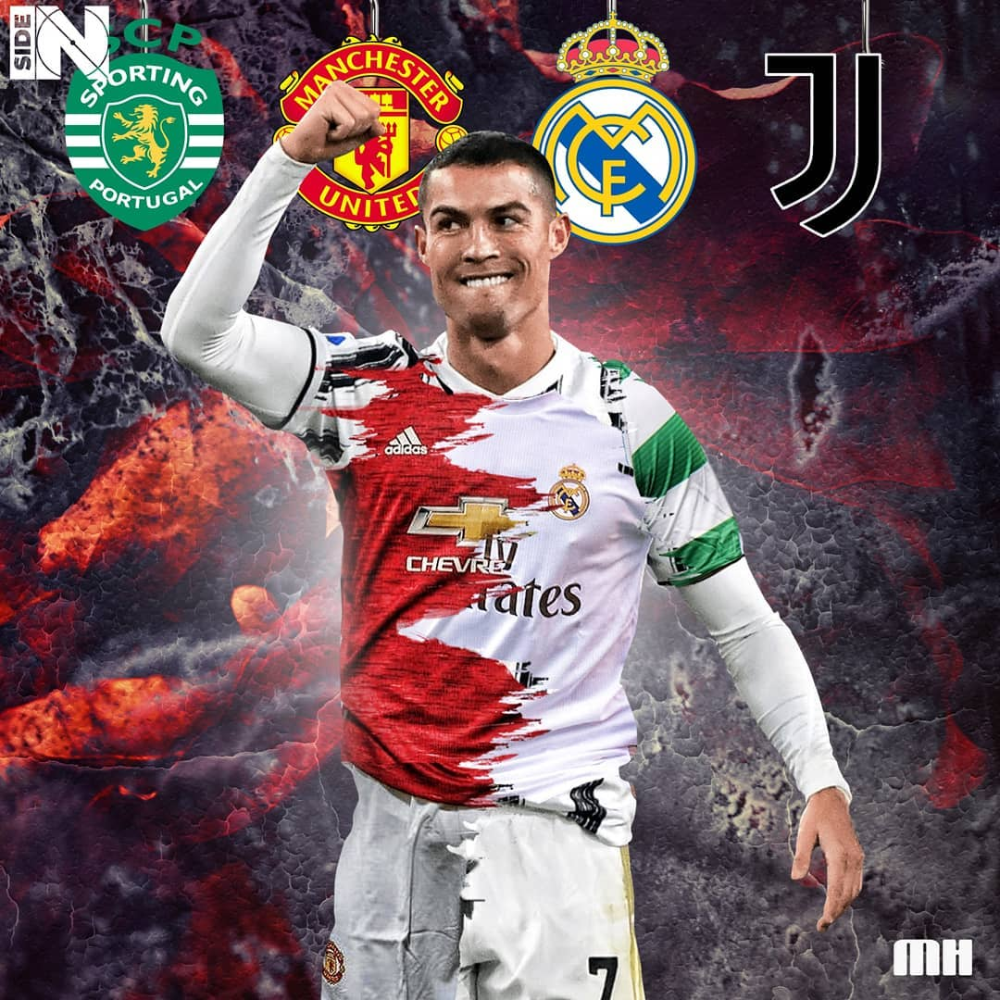
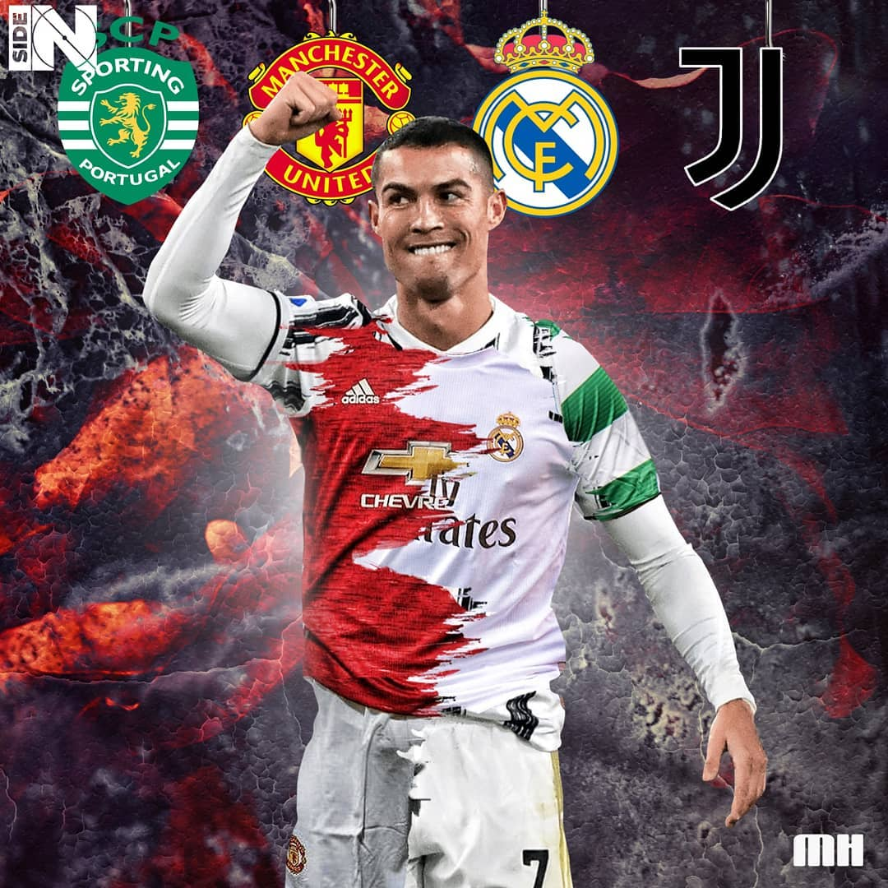

زندگینامه کامل پسری از جزیرهای کوچک که با انضباط پولادین، خود را به یکی از بهترین و پرافتخارترین بازیکنان تاریخ تبدیل نمود در دنیای فوتبال، استعدادهای ناب بسیاری ظهور کردهاند، اما کمتر کسی مانند کریستیانو رونالدو دوس سانتوس آویرو توانسته است واژههای «تلاش»، «انضباط» و «اراده» را با موفقیت ورزشی در هم بیامیزد. 💪 او نه یک استعداد صرف، که یک پروژه خودساخته برای رسیدن به کمال است؛ ماشینی بینقص که با تمرینهای طاقتفرسا، جاهطلبی سیریناپذیر و یک ذهنیت برنده، خود را از پسری فقیر در جزیرهای کوچک به یکی از بزرگترین نمادهای ورزش در تاریخ جهان تبدیل کرد.
کریستیانو رونالدو در ۵ فوریه ۱۹۸۵ (برابر با ۱۶ بهمن ۱۳۶۳) در شهر فونچال، مرکز جزیره مادیرا در پرتغال، در یک خانواده بسیار فقیر و پرجمعیت به دنیا آمد. او کوچکترین فرزند خانواده بود. پدرش، ژوزه دینیس آویرو، باغبان و تدارکاتچی یک باشگاه محلی بود و مادرش، ماریا دولورس دوس سانتوس، به عنوان آشپز و نظافتچی کار میکرد تا به مخارج خانواده کمک کند. نام «رونالدو» به پیشنهاد پدرش و به دلیل علاقهاش به رونالد ریگان، رئیسجمهور وقت آمریکا، برای او انتخاب شد.
او در محلهای فقیرنشین بزرگ شد و از همان کودکی، فوتبال تنها سرگرمی و راه فرار او از سختیهای زندگی بود. او به معنای واقعی کلمه، با توپ زندگی میکرد و ساعتهای بیپایان را در خیابانهای باریک محلهشان به بازی میپرداخت. عشق و اشتیاق او به فوتبال آنچنان بود که گاهی برای بازی کردن، از انجام تکالیف مدرسه سر باز میزد. در سن ۱۵ سالگی، زندگی حرفهای او با یک چالش بزرگ و خطرناک روبرو شد. پزشکان تشخیص دادند که او دچار بیماری «تاکیکاردی» یا تپش قلب نامنظم است؛ شرایطی که میتوانست به دوران فوتبال او برای همیشه پایان دهد. اما با رضایت خانواده، او تحت یک عمل جراحی با لیزر قرار گرفت. این عمل موفقیتآمیز بود و او تنها چند روز پس از آن، دوباره به تمرینات بازگشت. این غلبه بر یک مانع بزرگ، اراده پولادین او را در همان سنین نوجوانی به نمایش گذاشت.
استعداد رونالدو خیلی زودتر از آن بود که در جزیره مادیرا محدود بماند. او ابتدا به باشگاه محلی «ناسیونال» پیوست و سپس در سن ۱۲ سالگی، در یکی از سختترین تصمیمات زندگیاش، خانواده را ترک کرد و به تنهایی به پایتخت رفت تا به آکادمی مشهور باشگاه «اسپورتینگ لیسبون» ملحق شود. او اولین بازیکنی بود که در تاریخ این باشگاه، در تمام ردههای سنی زیر ۱۶ سال، زیر ۱۷ سال، زیر ۱۸ سال، تیم «ب» و تیم اصلی در یک فصل بازی کرد. نقطه عطف دوران حضور او در اسپورتینگ، در تاریخ ۶ اوت ۲۰۰۳ رقم خورد. در بازی دوستانه برای افتتاح ورزشگاه جدید اسپورتینگ، این تیم به مصاف باشگاه بزرگ «منچستر یونایتد» انگلیس رفت. در آن بازی، رونالدوی ۱۸ ساله با حرکات تکنیکی، سرعت ویرانگر و دریبلهای بیامانش، مدافعان باتجربه منچستر یونایتد را به معنای واقعی کلمه نابود کرد. بازیکنان منچستر یونایتد پس از بازی، در رختکن از سرمربی افسانهای خود، «سِر الکس فرگوسن»، خواستند تا هر طور شده این پسر جوان را به خدمت بگیرد. فرگوسن که خود نیز مسحور استعداد او شده بود، در همان سفر، کار انتقال او را نهایی کرد.